1 · Endocrine Physiology I
Hormone Synthesis & Functions · Pituitary Hormones · Thyroid Hormones
Instructional Objectives
- Review the feedback system for the regulation of hormones.
- Describe the stimulus, synthesis, function, and controlling hormones of the pituitary gland.
- Describe the stimulus, synthesis, function, and controlling hormones of the thyroid gland.
- Compare and contrast the hormones of the adenohypophysis and the neurohypophysis and their function.
- Compare and contrast the hypothalamic hormones and their function.
1.1 General Principles of Hormones
A hormone is a chemical messenger secreted by an endocrine gland (or cell) directly into the blood, which carries it to distant target cells that possess specific receptors. Hormones are defined by their mode of action rather than their chemistry, and act at extremely low plasma concentrations (on the order of picograms to nanograms per mL).
The three hormone classes
- Proteins & peptides (3–200 amino acids) — water-soluble, stored in secretory vesicles, and released by exocytosis. Bind surface (membrane) receptors. Includes all pituitary hormones (GH, ACTH, TSH, FSH/LH, ADH, oxytocin), insulin and glucagon (pancreas), and PTH (parathyroid).
- Steroids — derived from cholesterol, lipid-soluble, made "on demand" with very little storage, and travel bound to plasma carrier proteins. Cross the cell membrane and bind intracellular (cytoplasmic/nuclear) receptors. Includes cortisol and aldosterone (adrenal cortex), estrogen/progesterone (ovary), testosterone (testis), and 1,25-dihydroxycholecalciferol (kidney).
- Tyrosine derivatives (amines) — two subtypes that behave very differently: thyroid hormones (T3, T4) are lipid-soluble, carried on thyroxine-binding globulin, and act on nuclear receptors; catecholamines (epinephrine, norepinephrine) are water-soluble, stored in vesicles, and act on membrane receptors.
Receptors and second messengers
- Membrane receptors — used by water-soluble hormones (peptides, catecholamines). Act through second-messenger systems: G-protein-coupled receptors (cAMP, IP3/Ca2+) and enzyme-linked receptors (tyrosine kinase, JAK/STAT). Fast responses (seconds–minutes).
- Intracellular receptors — used by lipid-soluble hormones (steroids, thyroid hormone). The hormone–receptor complex binds a hormone-response element on DNA to alter gene transcription. Slow onset (hours) but long-lasting.
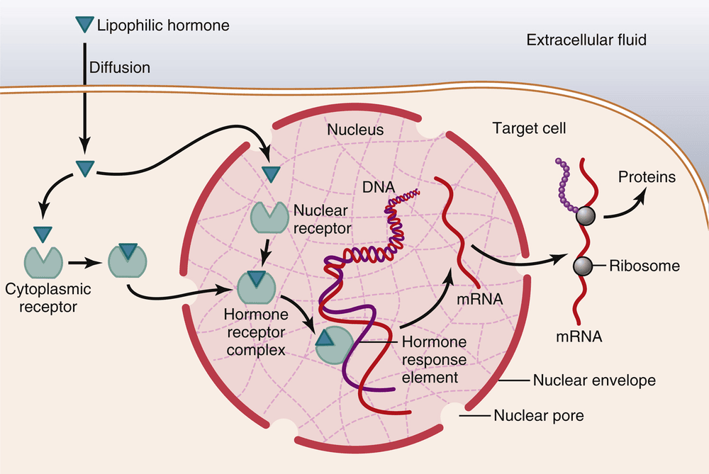
Hormone clearance and plasma concentration
Plasma hormone concentration is a balance between secretion and clearance. Hormones are removed by (1) metabolic destruction in tissues, (2) binding to tissue receptors, (3) excretion by the liver into bile, and (4) excretion by the kidney into urine. Water-soluble hormones are cleared quickly; protein-bound (steroid, thyroid) hormones circulate far longer because only the free fraction is available for clearance.
Control of secretion — feedback (IO a)
- Negative feedback — the most common control mechanism. The biological effect (or the downstream hormone) feeds back to inhibit the original endocrine cell, keeping the system near a set point. Example: cortisol inhibits both CRH (hypothalamus) and ACTH (pituitary).
- Positive feedback — the response amplifies further secretion. Rarer and self-limited. Classic example: the estrogen surge that triggers the mid-cycle LH surge, and oxytocin during labor.
- Cyclic variation — secretion overlaid with rhythms (e.g., cortisol’s circadian rhythm, the monthly menstrual cycle).
1.2 The Pituitary Gland & Hypothalamic Control (IO b, d, e)
The pituitary (hypophysis) sits in the sella turcica and has two functionally distinct lobes that arise from different tissues.
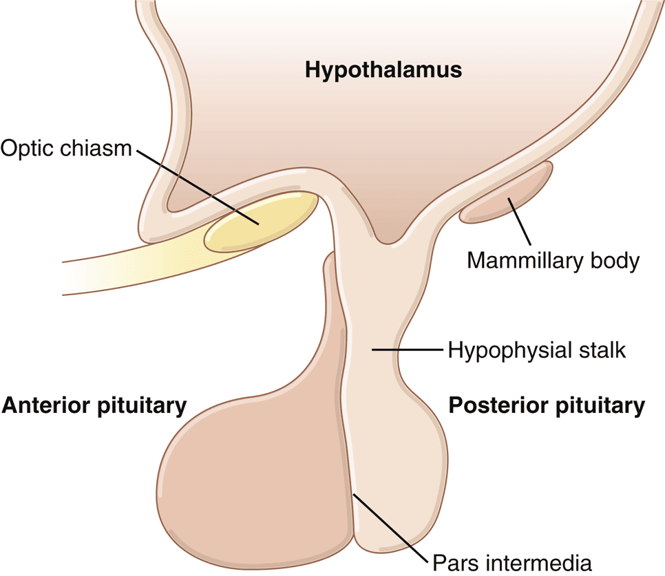
| Adenohypophysis (anterior) | Neurohypophysis (posterior) |
|---|---|
| Glandular epithelium (from Rathke’s pouch) | Neural tissue (extension of hypothalamus) |
| SYNTHESIZES its own hormones | Only STORES/RELEASES hormones made in the hypothalamus |
| Controlled by hypothalamic releasing/inhibiting hormones via the portal blood | Controlled directly by nerve axons (hypothalamic–hypophysial tract) |
| GH, ACTH, TSH, Prolactin, FSH, LH (+MSH) | ADH (vasopressin) and Oxytocin |
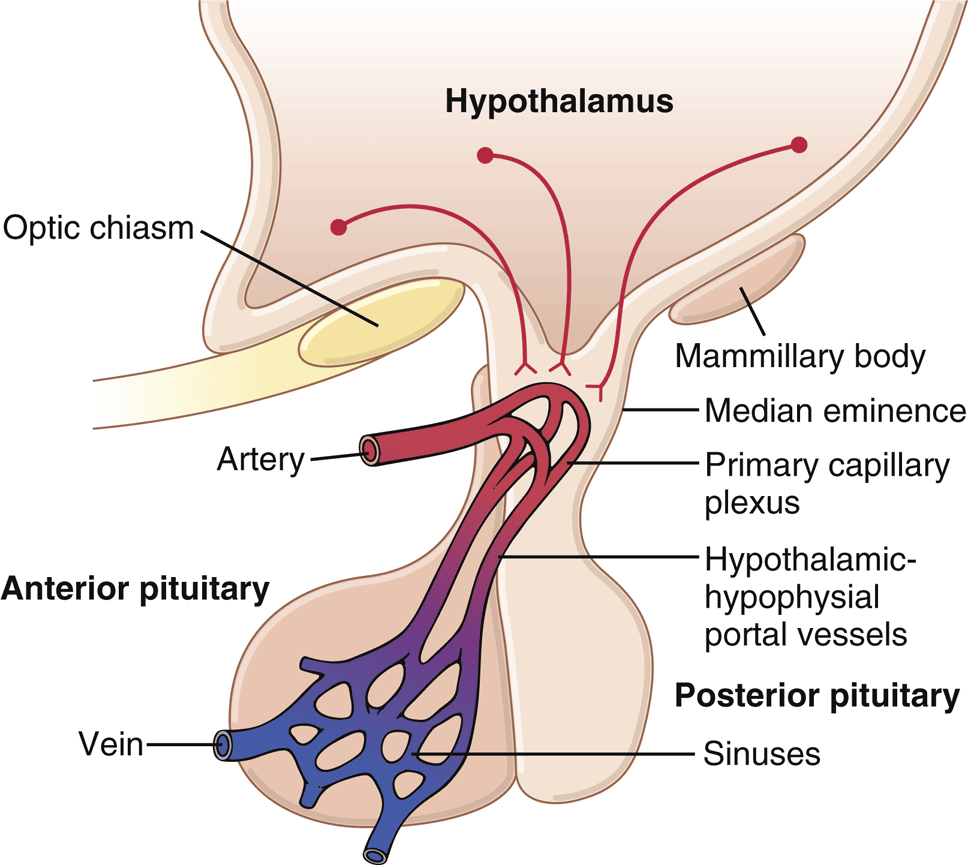
Hypothalamic (hypophysiotropic) hormones — IO e
- GHRH — stimulates GH; Somatostatin (GHIH) — inhibits GH (and TSH).
- TRH — stimulates TSH (and prolactin).
- CRH — stimulates ACTH.
- GnRH — stimulates FSH and LH.
- Dopamine (PIH) — inhibits prolactin (prolactin is unique: under tonic inhibition).
1.3 Anterior Pituitary Hormones
- Growth hormone (GH / somatotropin) — from somatotropes (~35% of the gland); acts on liver and peripheral tissues.
- ACTH (corticotropin) — drives the adrenal cortex to make cortisol.
- TSH (thyrotropin) — drives the thyroid.
- Prolactin — milk synthesis; under tonic dopamine inhibition.
- FSH & LH (gonadotropins) — drive the gonads.
Growth Hormone in detail
GH is a 191-amino-acid protein hormone and, unlike the other anterior pituitary hormones, it acts broadly on the body rather than on a single target gland. Its metabolic theme is to favor protein and shift fuel use toward fat, sparing glucose.
- Protein — ↑ amino-acid transport, ↑ transcription and translation, ↓ protein catabolism (anabolic).
- Fat — ↑ mobilization and oxidation of fatty acids for energy.
- Carbohydrate — ↓ glucose uptake by muscle/fat and ↑ hepatic gluconeogenesis, raising blood glucose. This is the "diabetogenic" effect of GH.
- Growth — stimulated largely indirectly through IGF-1 (somatomedin C) from the liver.
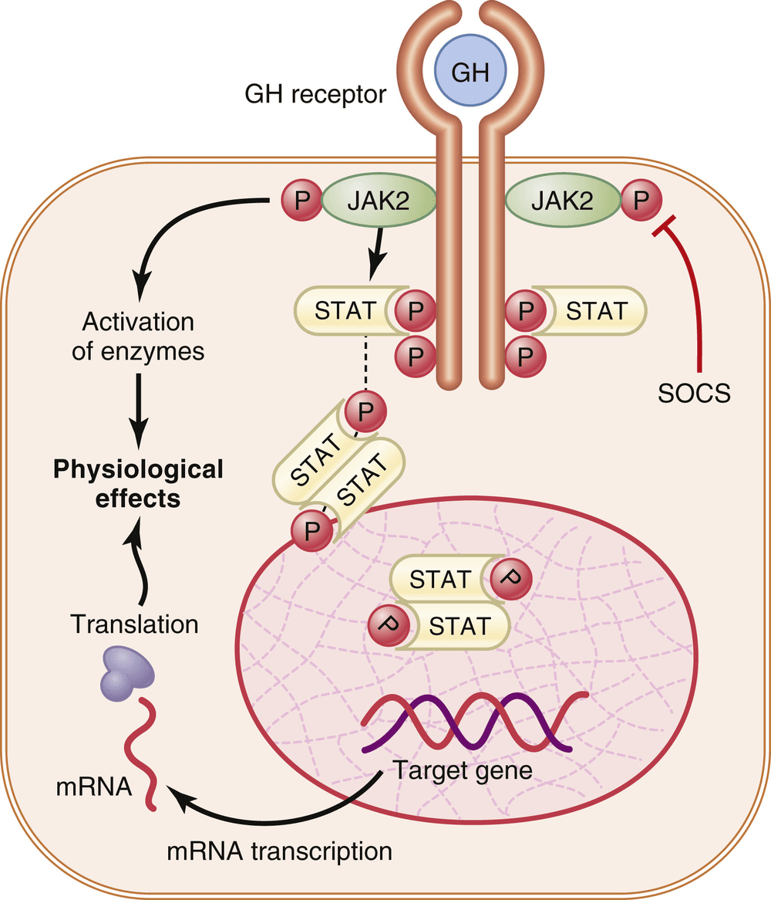
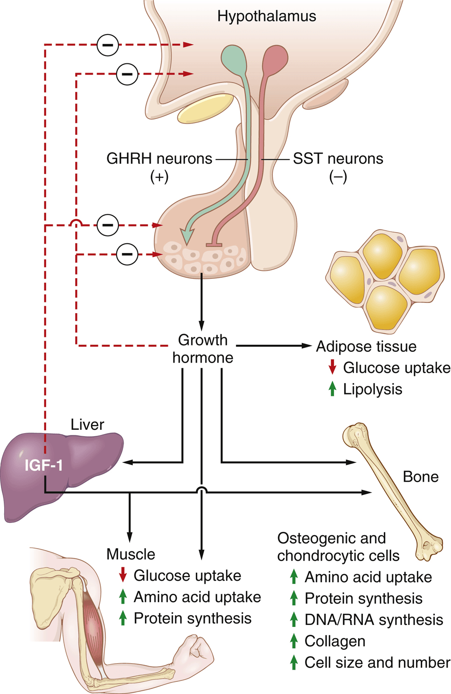
- Stimulate GH — deep sleep, exercise, stress, hypoglycemia, high blood amino acids (arginine), ghrelin, fasting.
- Inhibit GH — high blood glucose/free fatty acids, obesity, aging, cortisol, and GH/IGF-1 feedback.
- With age — GH falls (roughly 6 ng/mL in young adults down toward ~1.6 ng/mL by mid-adult life).
1.4 Posterior Pituitary Hormones
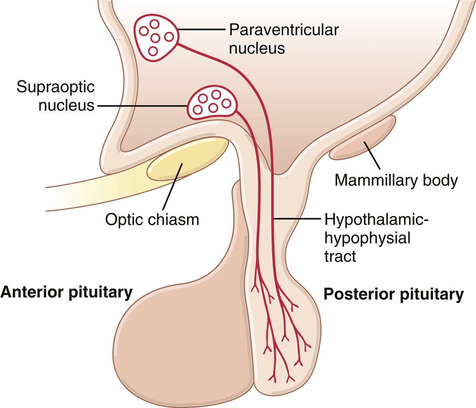
- ADH (vasopressin, AVP) — 9-amino-acid peptide from the supraoptic nucleus; acts on the kidney (collecting duct → inserts aquaporins → water reabsorption) and vasculature (vasoconstriction). Released by ↑ plasma osmolality and by ↓ blood volume/pressure.
- Oxytocin — 9-amino-acid peptide from the paraventricular nucleus; causes milk let-down (contraction of breast myoepithelial cells) and uterine contraction. A classic positive-feedback hormone.
1.5 Thyroid Hormones (IO c)
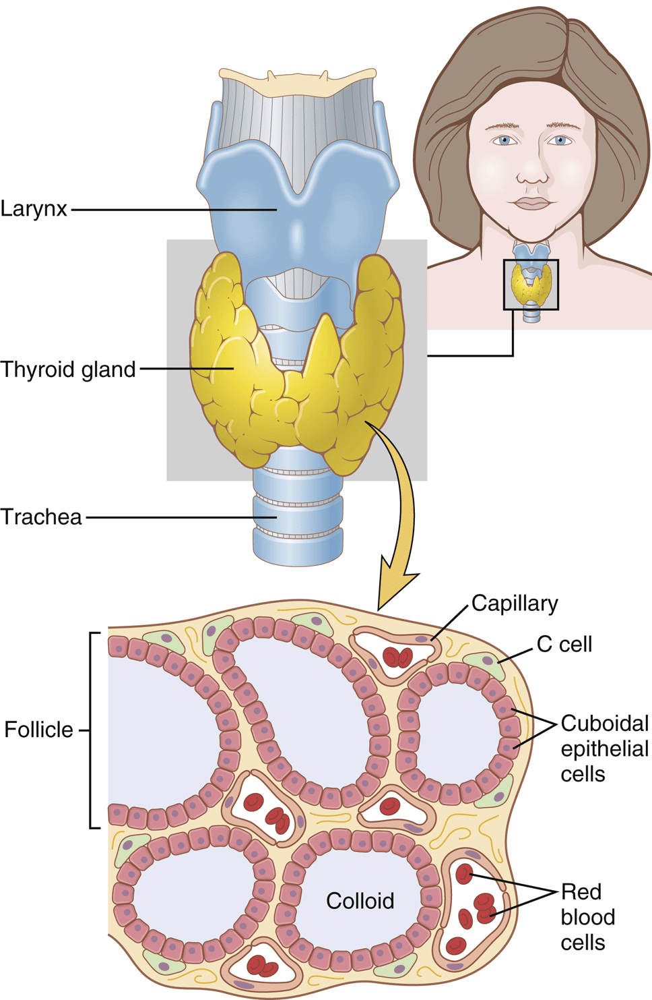
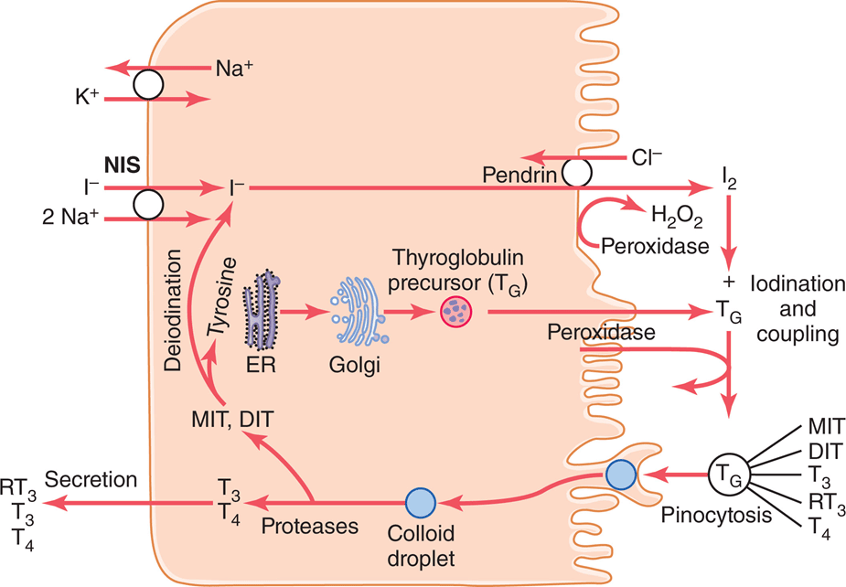
Transport and cellular action
- Transport — ~99% of circulating thyroid hormone is protein-bound, mostly to thyroxine-binding globulin (TBG), with transthyretin and albumin as nonspecific carriers. Only the tiny free fraction is active. Binding distributes hormone through the body and buffers its levels.
- Latency/half-life — T3 acts within 6–12 h; T4 within 2–3 days, with a half-life of ~6–7 days (activity persisting ~15 days). T3 has higher receptor affinity than T4.
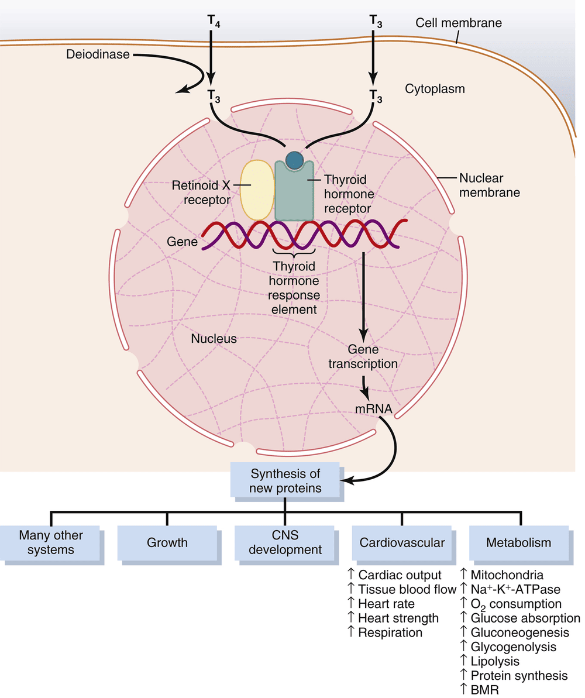
Physiological effects of T3/T4
- Metabolic — ↑ basal metabolic rate, ↑ O2 consumption and heat production, ↑ Na+/K+-ATPase activity.
- Cardiovascular — ↑ heart rate, ↑ cardiac output and tissue blood flow, widened pulse pressure (mean pressure roughly unchanged).
- Other — ↑ respiration, ↑ GI motility (diarrhea when high), ↑ CNS activity (anxiety, nervousness), and effects on muscle (slight ↑ strength; tremor when high).
- Growth — needed for normal skeletal growth and, critically, CNS development in children (deficiency → impaired growth and cognition).
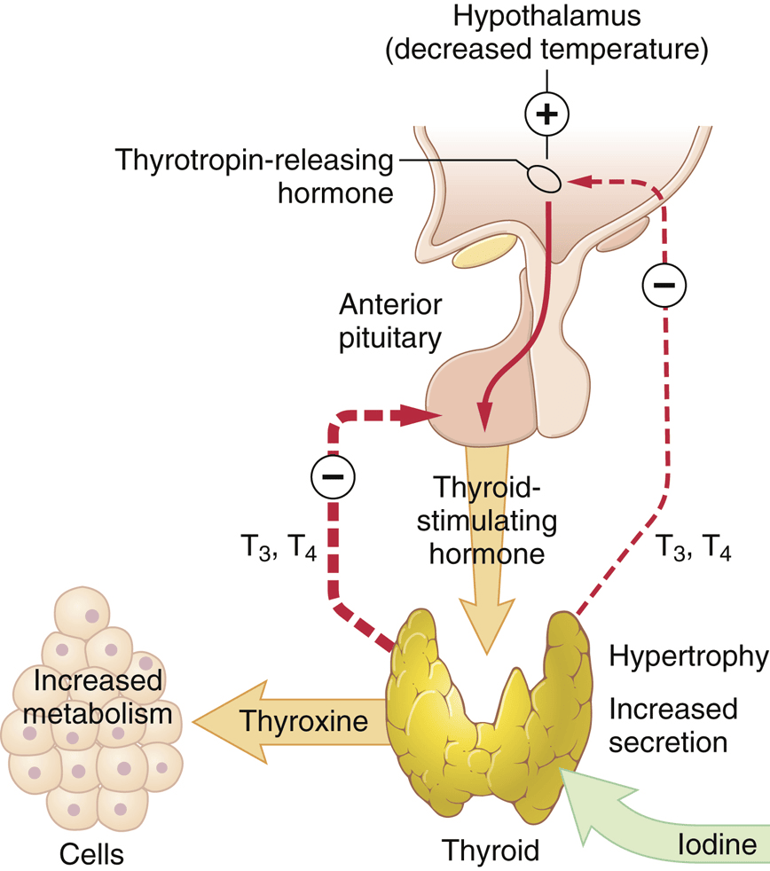
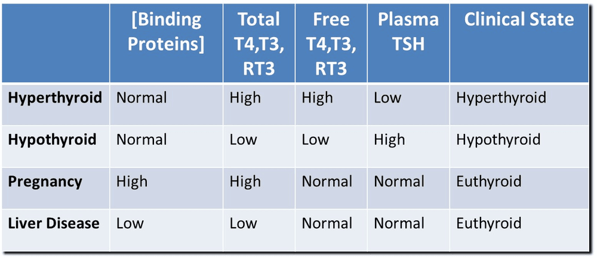
2 · Endocrine Physiology II
Adrenal (Cortex & Medulla) · Pancreatic Hormones · Parathyroid & Calcium
Instructional Objectives
- Describe the stimulus, synthesis, and function of the parathyroid gland.
- Discuss the stimulus, synthesis, function, and controlling hormones of the adrenal cortex.
- Describe the synthesis and function of the adrenal medulla.
- Describe the stimulus, synthesis, and function of the endocrine pancreas and its hormones.
2.1 Adrenal Gland Overview
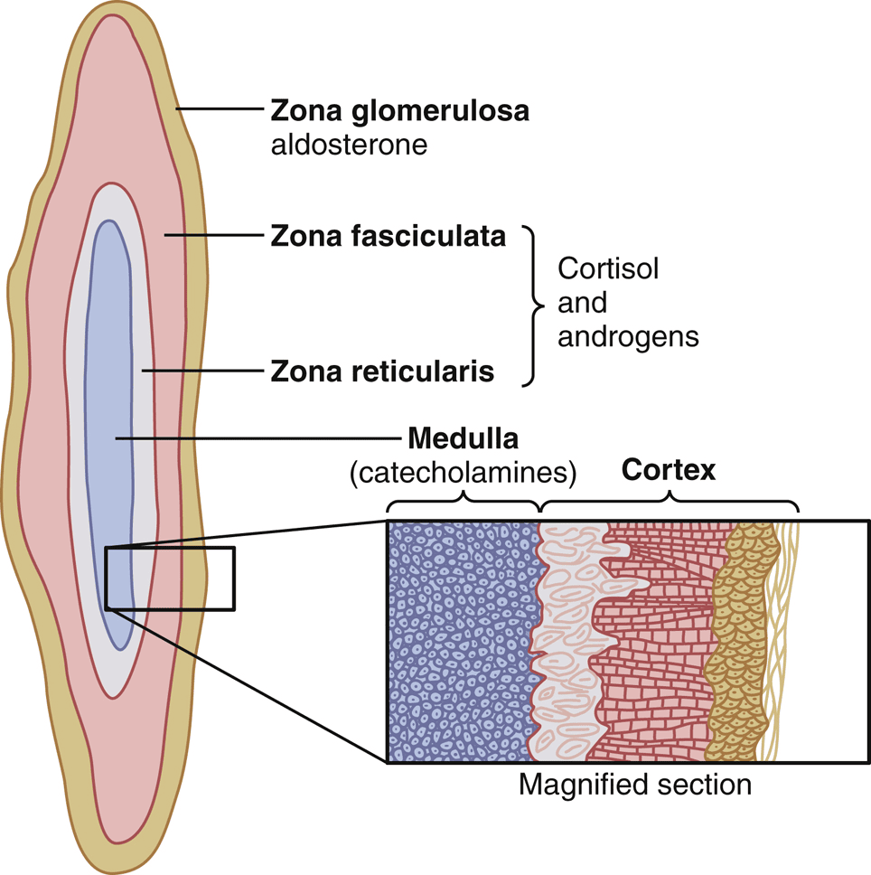
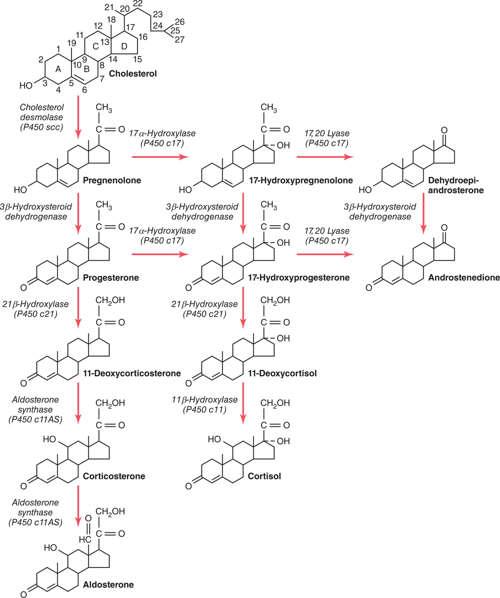
2.2 Aldosterone — the major mineralocorticoid
- Made in — zona glomerulosa; acts on the renal collecting duct (principal cells).
- Function — ↑ Na+ reabsorption and ↑ K+ and H+ secretion → expands ECF/blood volume and raises blood pressure.
- Control (most important first) — ↑ plasma K+ and ↑ angiotensin II (RAAS) are the two main stimulators; ↑ ECF volume suppresses it; ACTH is permissive (needed for secretion but not a major regulator of the rate).
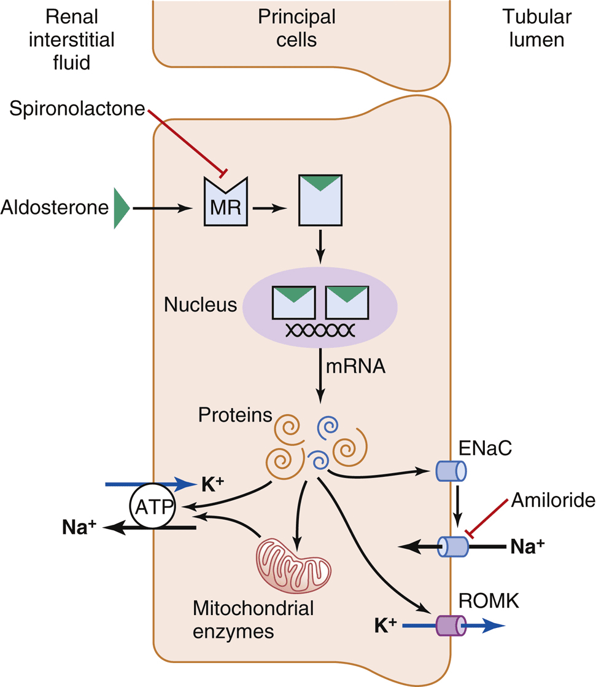
Physiological effects of aldosterone (K+ is the theme)
| High aldosterone | Low aldosterone |
|---|---|
| Hypokalemia (low K+) | Hyperkalemia (high K+) |
| Muscle weakness; slow HR, arrhythmias | ↑ muscle excitability early → arrhythmias, V-fib |
| Metabolic alkalosis (H+ secreted) | Metabolic acidosis |
| Na+/water retention → ↑ blood pressure | Na+ loss → volume depletion, ↓ BP |
2.3 Cortisol — the major glucocorticoid
- Made in — zona fasciculata; acts on peripheral tissues broadly. ~90% travels bound to cortisol-binding globulin (CBG).
- Carbohydrate — ↑ gluconeogenesis (induces liver enzymes, raises plasma amino acids, ↑ liver glycogen) and ↓ peripheral glucose use → raises blood glucose ("adrenal diabetes"). This is its best-known effect.
- Protein — ↓ protein stores everywhere EXCEPT the liver (↑ catabolism, ↓ synthesis); liver protein and plasma proteins rise.
- Fat — mobilizes fatty acids for energy (shift from glucose to fat fuel).
- Anti-inflammatory / immunosuppressive — stabilizes lysosomes, blocks inflammatory mediators, and suppresses the immune response (the basis of steroid drugs). Also needed to withstand stress.
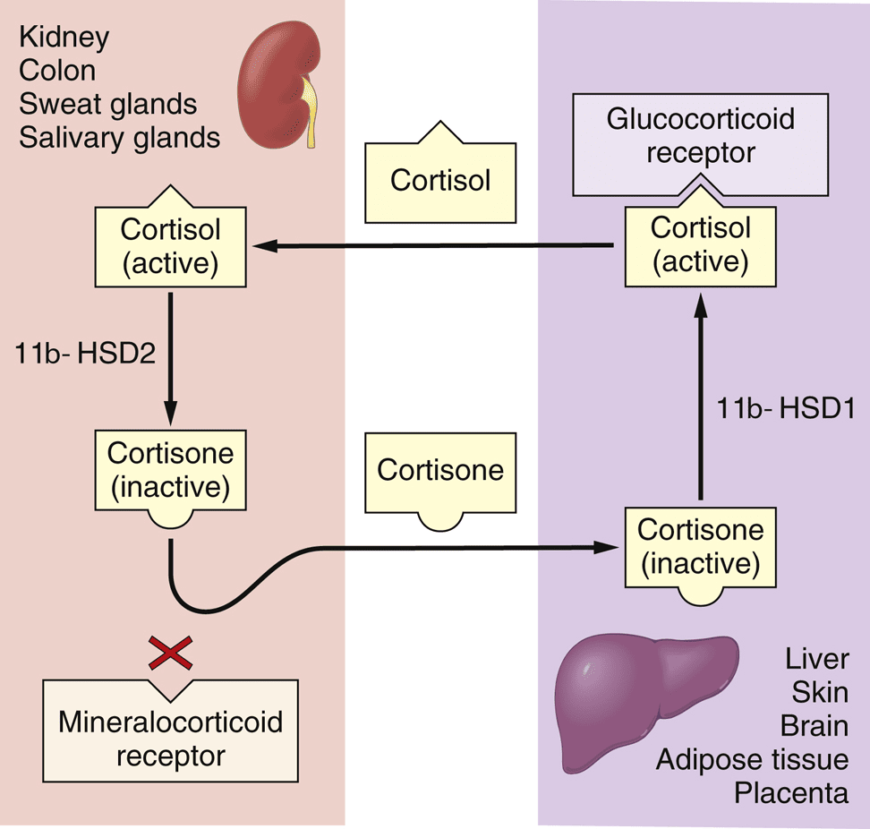
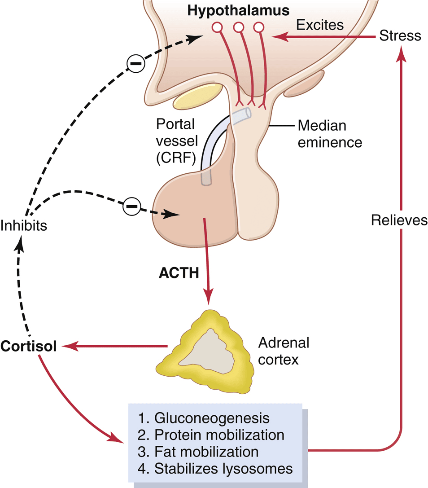
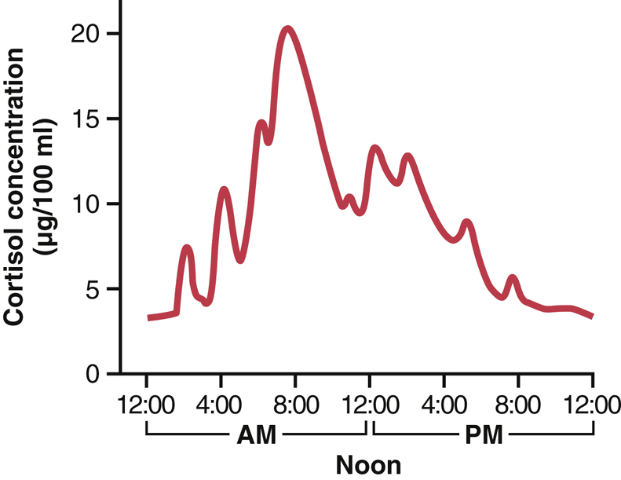
2.4 Adrenal Medulla (IO c)
- Secretes — the catecholamines epinephrine (~80%) and norepinephrine, made from tyrosine and stored in vesicles (water-soluble amines that act on membrane adrenergic receptors).
- Really modified sympathetic tissue — the chromaffin cells are like postganglionic sympathetic neurons without axons; preganglionic sympathetic fibers stimulate them directly.
- Function — reinforce the "fight-or-flight" response: ↑ heart rate and contractility, ↑ blood glucose (glycogenolysis, gluconeogenesis), ↑ lipolysis, bronchodilation, and redirection of blood flow.
2.5 Endocrine Pancreas (IO d)
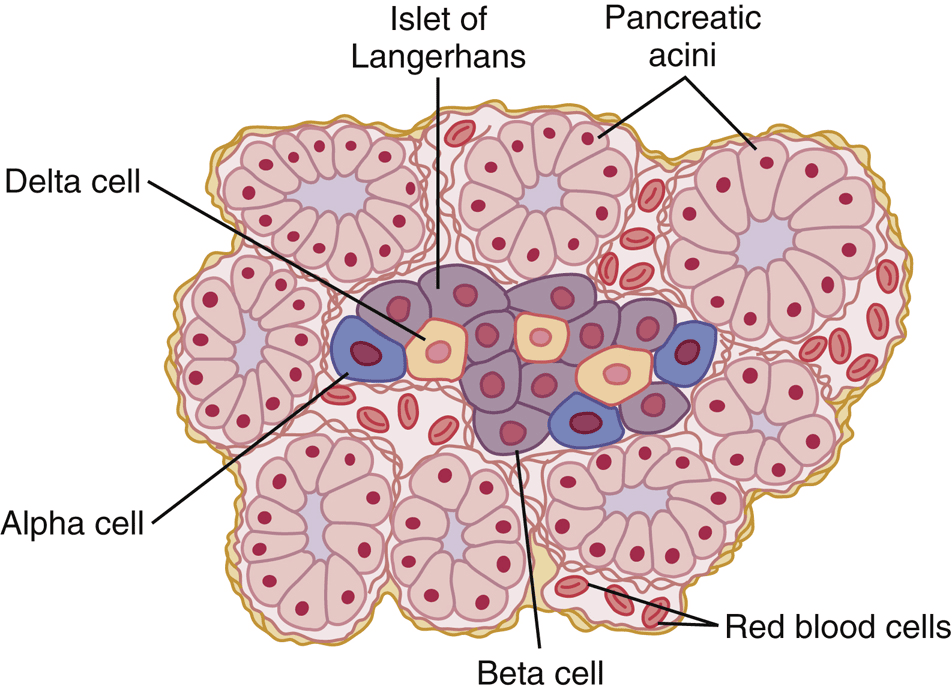
Insulin — the storage/"fed-state" hormone
- Made in — beta cells; a peptide with a 6-minute half-life, degraded by hepatic insulinase. C-peptide (cleaved from proinsulin) marks endogenous production.
- Acts on — muscle, liver, and fat via an enzyme-linked (tyrosine-kinase) receptor.
- Carbohydrate — ↑ glucose uptake into muscle and fat (GLUT4), and promotes hepatic glucose storage as glycogen. Note: insulin does NOT control glucose entry into the brain (GLUT1, insulin-independent).
- Fat — promotes fat storage: ↑ glucose→triglyceride, ↑ lipoprotein lipase, ↓ hormone-sensitive lipase. Loss of insulin → unchecked lipolysis → ketoacids (DKA).
- Protein — anabolic: ↑ amino-acid transport, ↑ transcription/translation, ↓ catabolism.
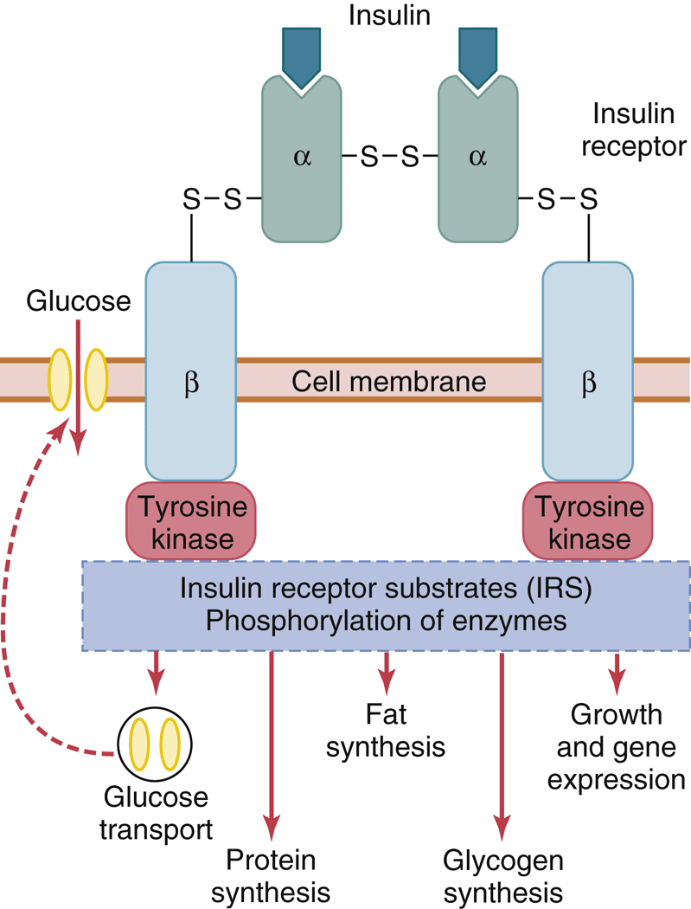
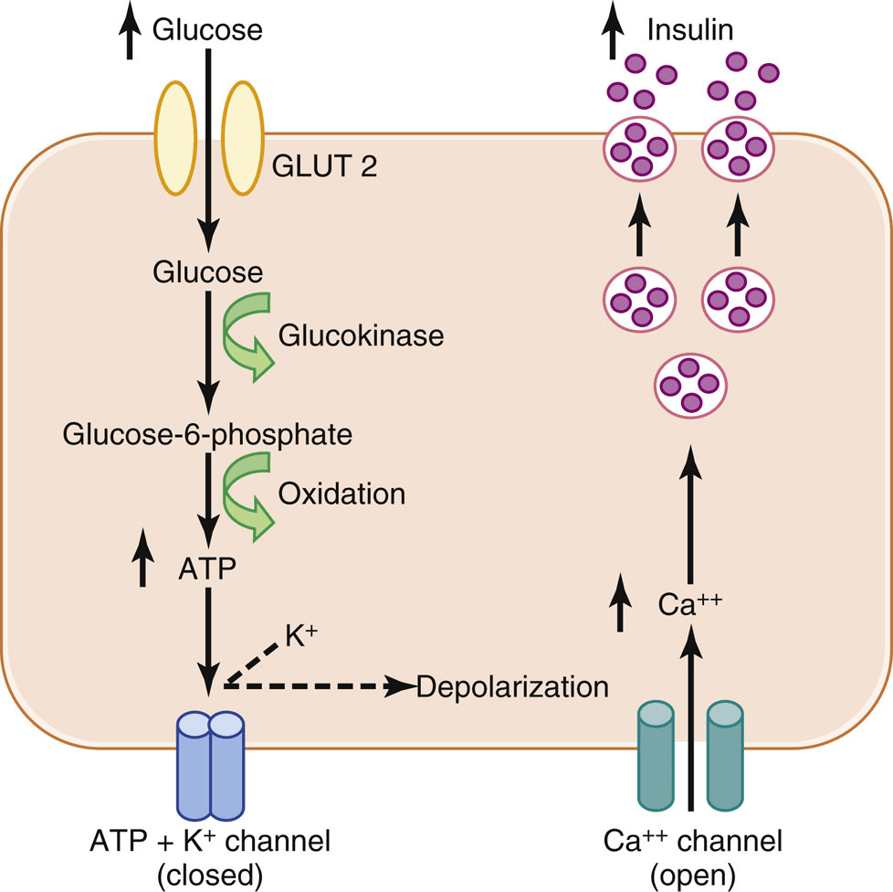
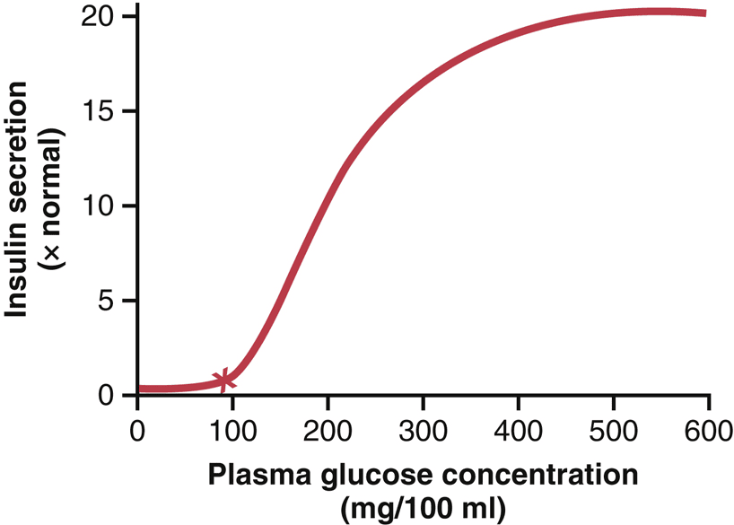
Glucagon, somatostatin, and glucose regulation
- Glucagon — from alpha cells; acts on the liver to ↑ glycogenolysis and ↑ gluconeogenesis, raising blood glucose. Opposes insulin. Stimulated by hypoglycemia, amino acids, and fasting/exercise; inhibited by glucose, insulin, and somatostatin.
- Somatostatin — from delta cells; a paracrine "brake" that inhibits both insulin and glucagon and slows GI activity to smooth out fuel absorption. (Also the hypothalamic GH-inhibiting hormone.)
- Epinephrine & cortisol/GH — counter-regulatory: during hypoglycemia they mobilize glucose and fat.
- Big picture — insulin lowers glucose after meals; glucagon (plus epinephrine, cortisol, GH) raises it during fasting; the liver is the buffer that stores and releases glucose.
2.6 Bone, Calcium & the Parathyroid (IO a)
Only ~0.1% of body calcium is in the ECF, yet it is tightly regulated (ionized Ca2+ is what matters for nerve/muscle) because bone is a vast calcium reservoir. Three hormones control calcium: PTH and 1,25-vitamin D raise plasma Ca2+; calcitonin lowers it.
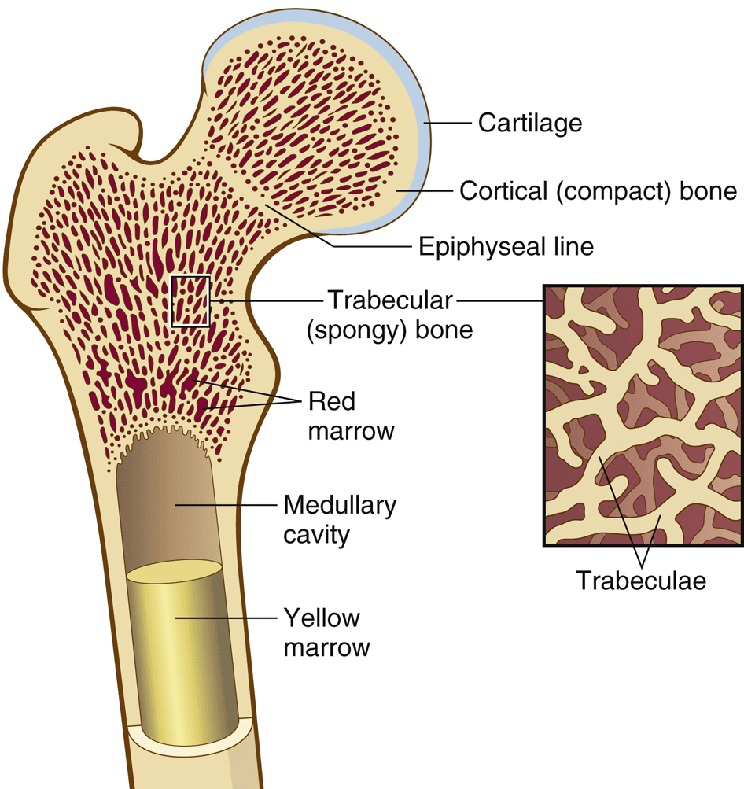
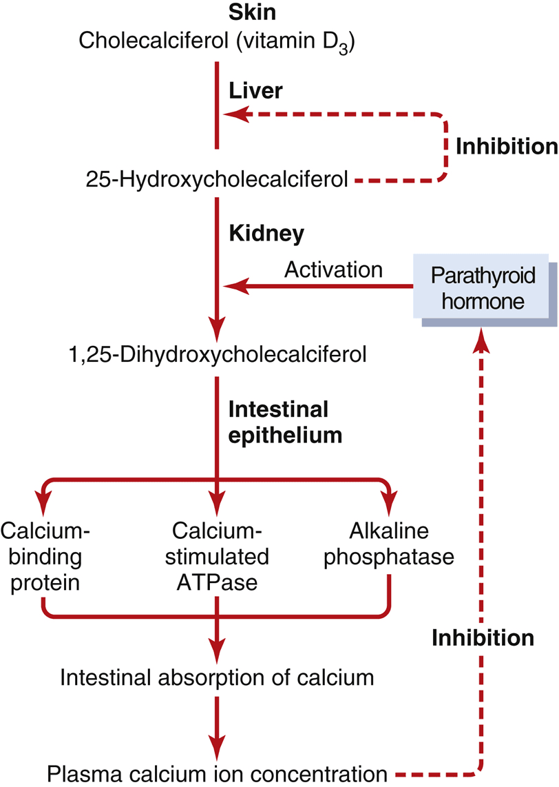
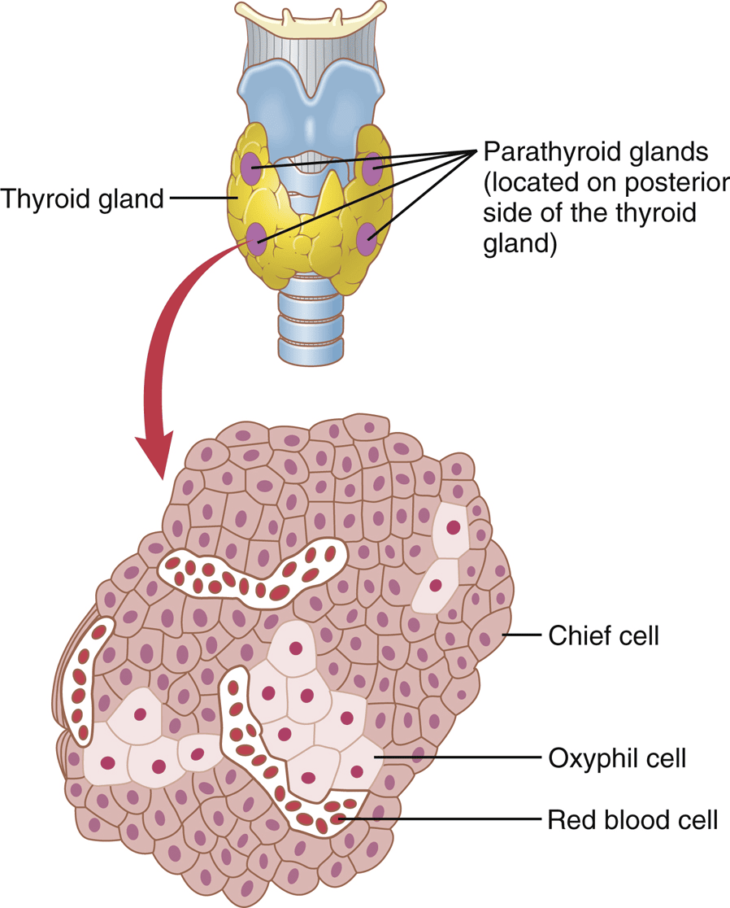
Actions of PTH — raises plasma calcium
- Bone — activates osteoblasts/osteocytes, which then recruit osteoclasts (osteoclasts have NO PTH receptor — they are turned on indirectly, e.g., via RANKL/OPGL) → bone resorption releases Ca2+ and phosphate.
- Kidney — ↑ Ca2+ reabsorption (keeps calcium) but ↑ phosphate excretion (dumps phosphate), and stimulates the 1α-hydroxylase step that makes active vitamin D.
- Intestine — indirect: via activated vitamin D, ↑ Ca2+ and phosphate absorption.
- Control — low plasma Ca2+ stimulates PTH (via the calcium-sensing receptor); high Ca2+ suppresses it. Chronic low calcium causes parathyroid hypertrophy.
- Calcitonin — from thyroid parafollicular (C) cells; released by HIGH plasma calcium; inhibits osteoclasts to lower calcium. A relatively minor, transient player in humans (opposes PTH).
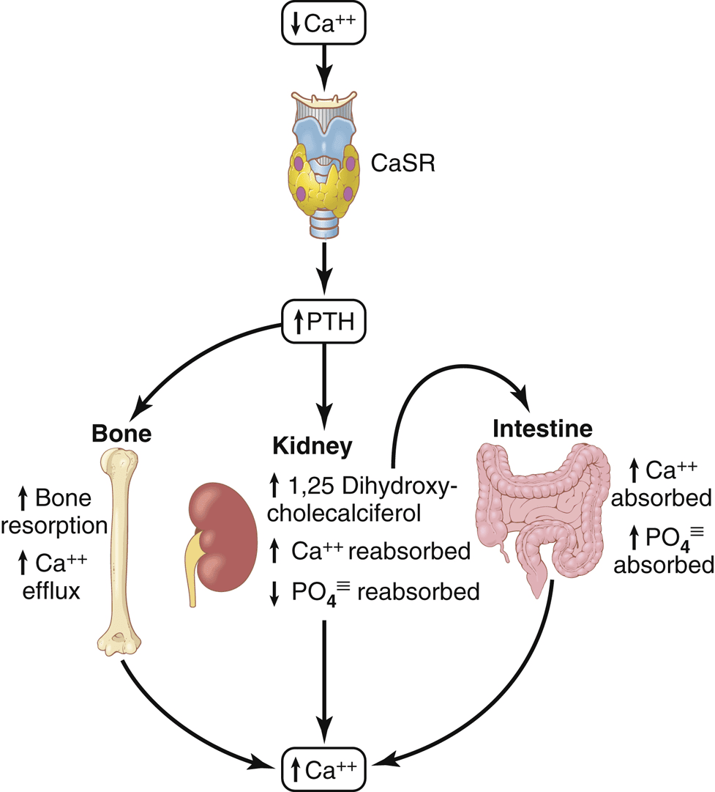
3 · Endocrine Physiology III
Reproductive & Hormonal Functions — Male, Female, Pregnancy, Lactation
Instructional Objectives
- Discuss the synthesis, function, and controlling hormones for testosterone.
- List the actions of testosterone and dihydrotestosterone.
- Describe the physiology of puberty.
- Compare and contrast the synthesis of estrogen and progesterone, including the controlling hormones.
- List the actions of estrogen and progesterone.
- Describe ovarian regulation and the menstrual cycle.
- Describe the stages of pregnancy, parturition, and lactation.
- Review the target organs of hormones.
3.1 Male Reproductive Physiology
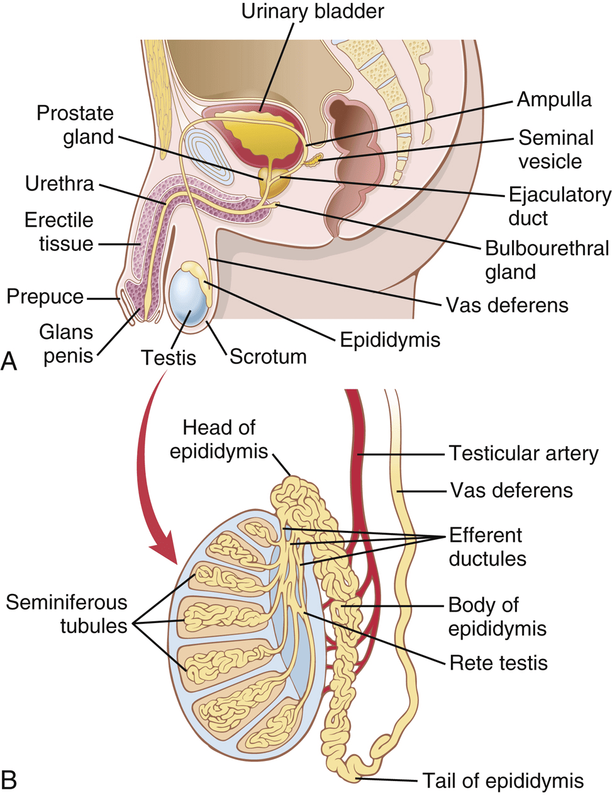
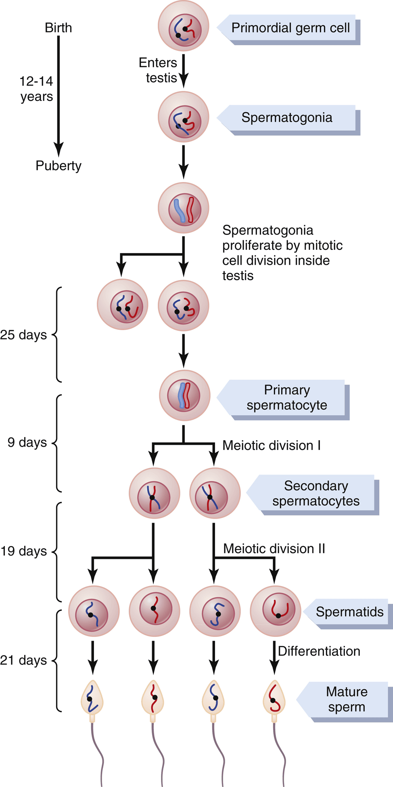
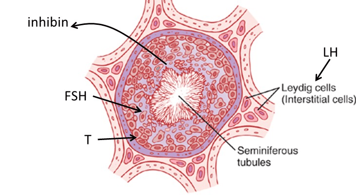
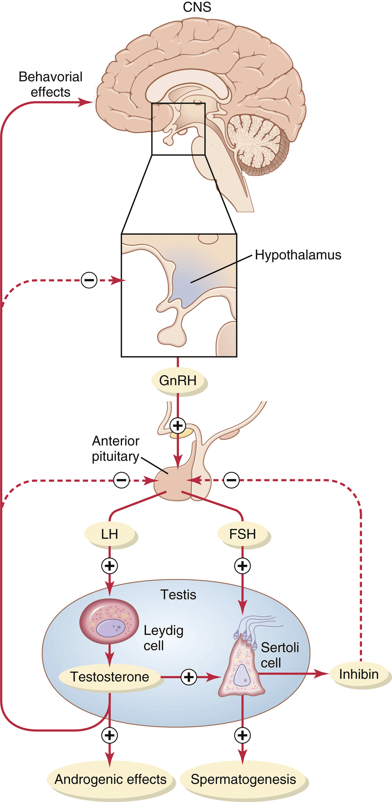
Testosterone & DHT — actions (IO a, b)
- Synthesis/transport — a steroid from cholesterol; ~98% travels bound to albumin and sex-hormone-binding globulin (only ~2% free). Converted to the more potent dihydrotestosterone (DHT) in target tissues by 5α-reductase; can also be aromatized to estrogen.
- Fetal — the SRY gene → testis-determining factor → testosterone drives male internal ducts; DHT drives external genitalia and testicular descent.
- Puberty/secondary sex characteristics — penis/scrotum/testis growth, body/facial hair, voice deepening (larynx), thicker/oilier skin (acne), ↑ muscle and bone, ↑ basal metabolic rate, and ↑ red blood cells.
- Skeleton — ↑ bone thickness and calcium deposition; eventually closes the epiphyses (very high levels can reduce final height); broadens/strengthens bone.
- DHT vs. testosterone — DHT is the main androgen for external genitalia, prostate, and male-pattern hair/balding; testosterone dominates for muscle, internal ducts, and libido.
3.2 Female Reproductive Physiology
The female axis uses the same players (GnRH → FSH/LH → ovarian estrogen/progesterone) but runs as a ~28-day cycle whose goal is to release one ovum and prepare the endometrium for implantation.
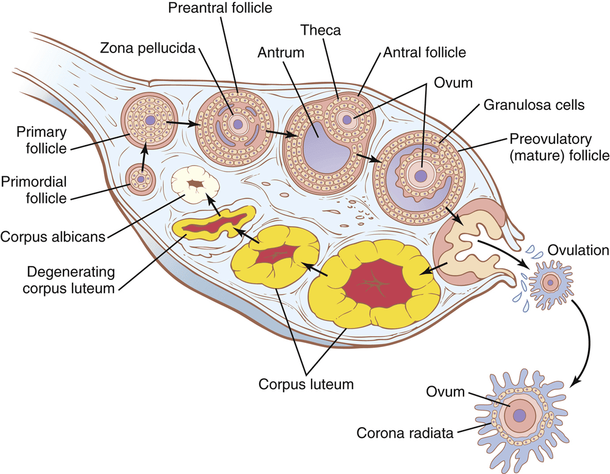
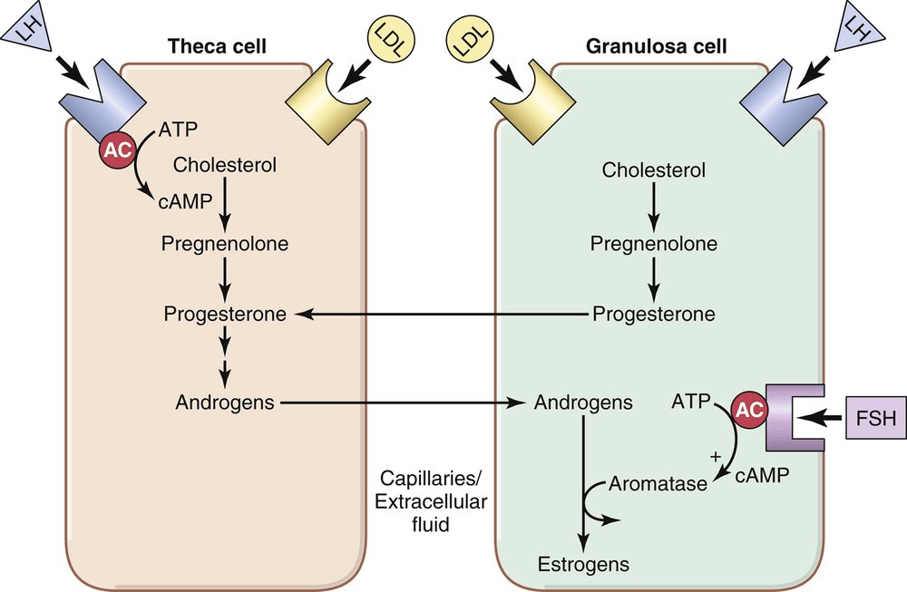
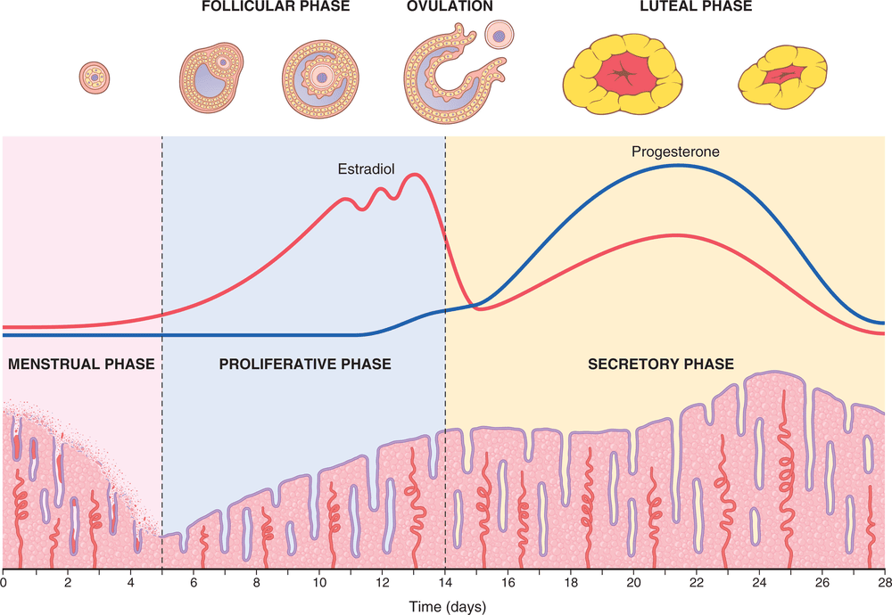
Regulation across the cycle (IO f, g)
- Follicular phase — FSH/LH begin follicle growth; rising estrogen exerts negative feedback (keeps FSH/LH modest) and rebuilds the endometrium.
- Pre-ovulatory (LH surge) — high estrogen switches to positive feedback → LH surge → ovulation.
- Luteal phase — the corpus luteum makes estrogen + progesterone, which suppress GnRH/LH/FSH; the endometrium enters the secretory phase.
- Menstruation — corpus luteum involutes → estrogen/progesterone fall → endometrial vasospasm, necrosis, and shedding (~40 mL blood).
Actions of estrogen vs. progesterone (IO e)
| Estrogen | Progesterone |
|---|---|
| Proliferates the endometrium; grows/matures sex organs | Secretory changes in endometrium (prepares for implantation) |
| Breast: ductal growth, fat deposition | Breast: lobule/alveolar development |
| Bone growth THEN epiphyseal closure; ↓ osteoclast activity | Reduces uterine contractility (quiets the uterus) |
| Female secondary sex characteristics; mild Na+/water retention | Slight ↑ body temperature; raises respiratory drive |
Puberty, menarche, menopause (IO c)
- Puberty — GnRH pulses gradually increase; onset ~11–16 years. Menarche (first menstruation) marks the start of cycles.
- Menopause — ~51 years on average; ovaries become unresponsive, estrogen/progesterone fall, and FSH/LH rise (loss of feedback).
3.3 Pregnancy (IO h)
- Fertilization — occurs in the ampulla of the fallopian tube; the ovum carries an X, sperm an X or Y. Capacitation prepares the sperm; the acrosome’s enzymes penetrate the ovum.
- Transport & implantation — the fertilized ovum reaches the uterus in ~3–5 days as a blastocyst (~100 cells) and implants ~1–3 days later. Trophoblast cells invade the endometrium and become the placenta.
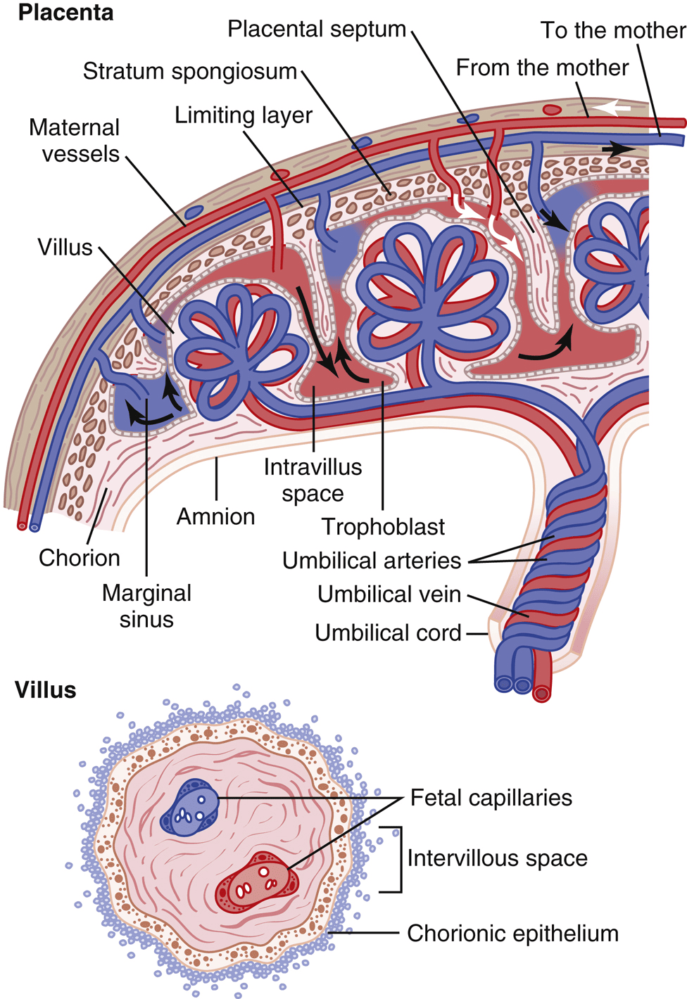
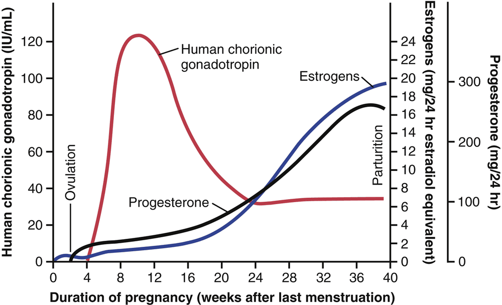
3.4 Parturition & Lactation (IO i)
- Parturition — a rising estrogen-to-progesterone ratio makes the uterus more excitable; oxytocin (with more uterine oxytocin receptors), fetal cortisol/prostaglandins, and cervical stretch drive labor. Cervical stretch → more oxytocin is the classic positive-feedback loop.
- Stages of labor — (1) cervical dilation to 10 cm, (2) fetal expulsion, (3) placental delivery, (4) immediate postpartum uterine involution.
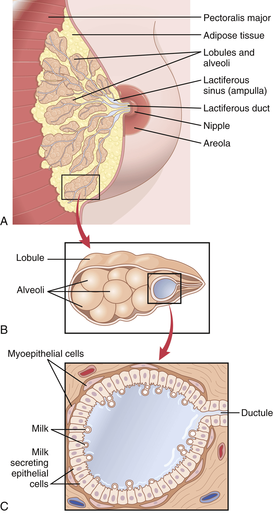
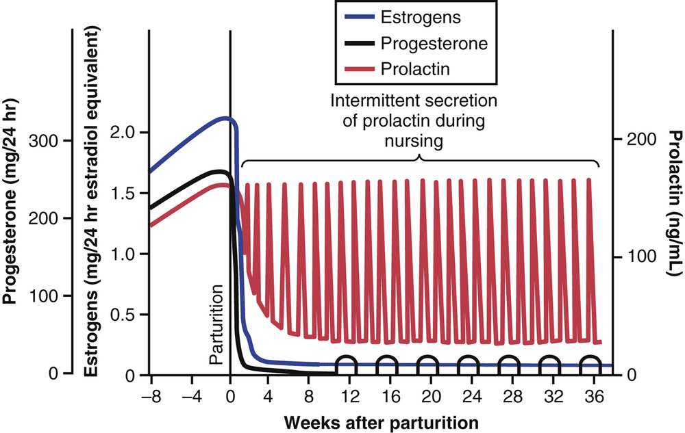
4 · Renal I
Fluid Regulation · Glomerular Filtration · Urinary System
Instructional Objectives
- Describe the micturition reflex.
- Identify bladder innervation.
- Describe glomerular filtration.
- Calculate glomerular filtration rate (GFR).
- Identify mechanisms that regulate GFR.
4.1 Bladder Innervation (IO b)
The bladder wall is the detrusor muscle — smooth muscle whose cells are electrically coupled, so an action potential spreads through the whole bladder and it contracts as a unit. Two sphincters guard the outlet: an internal sphincter (smooth muscle of the bladder neck, involuntary) and an external sphincter (skeletal muscle, voluntary).
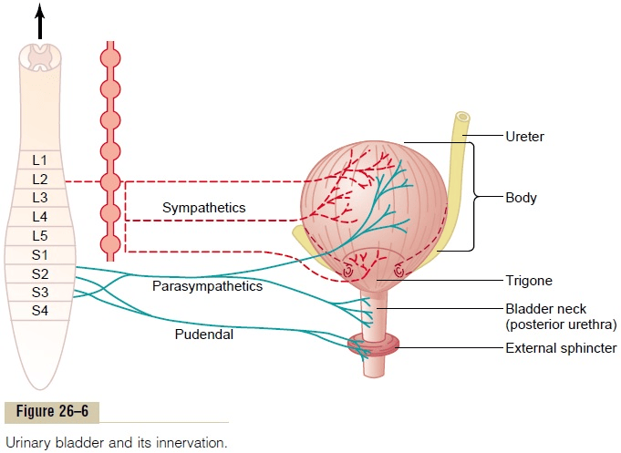
4.2 Micturition Reflex (IO a)
- The setup — urine flows essentially unchanged from the collecting ducts through calyces and ureters to the bladder, which fills progressively until wall tension crosses a threshold.
- The reflex — an autonomic spinal-cord reflex: stretch receptors → pelvic nerve afferents → sacral cord → parasympathetic efferents back to the detrusor → contraction (bladder pressure rises to 40–60 mmHg).
- Self-regenerative — each contraction stretches the bladder more, recruiting more sensory firing and stronger contraction, until the bladder empties or the reflex fatigues and resets.
- Voluntary control — higher centers (pons facilitates; cerebral cortex is mainly inhibitory) keep the reflex suppressed and hold the external sphincter closed until it is convenient. To void, the cortex facilitates the sacral center and relaxes the external sphincter. Normally only 5–10 mL residual urine remains.
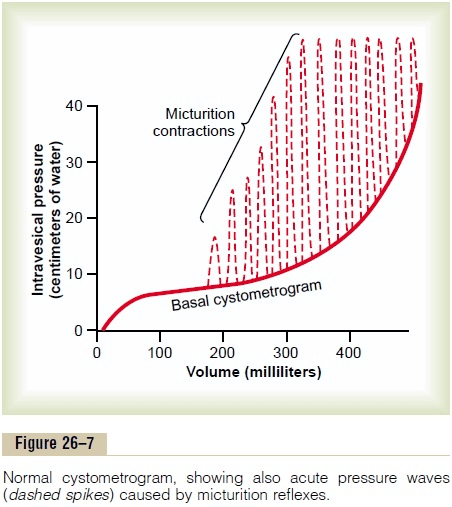
Summary chain: Bladder stretch → pelvic afferents (S2–S4) → sacral micturition center → parasympathetic efferents → detrusor contraction + internal sphincter relaxation → urination.
4.3 Glomerular Filtration (IO c)
Glomerular filtration is the first step in urine formation: plasma is filtered from the glomerular capillaries into Bowman’s capsule. The filtrate is essentially protein-free and cell-free plasma — it contains water, salts, glucose, amino acids, and small organic molecules, but normally almost no protein and no cells. The glomerulus filters ~180 L/day (GFR ≈ 125 mL/min).
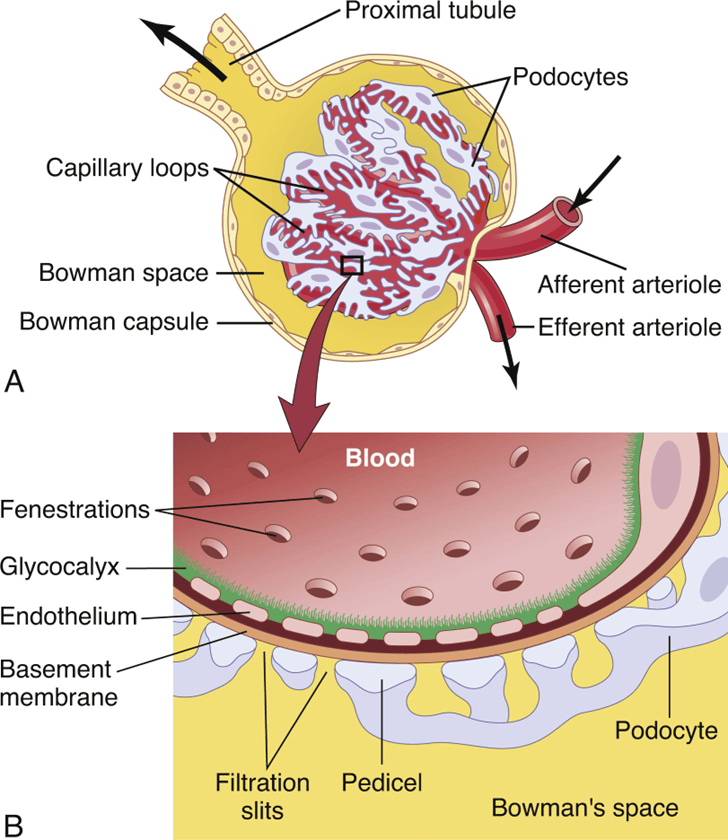
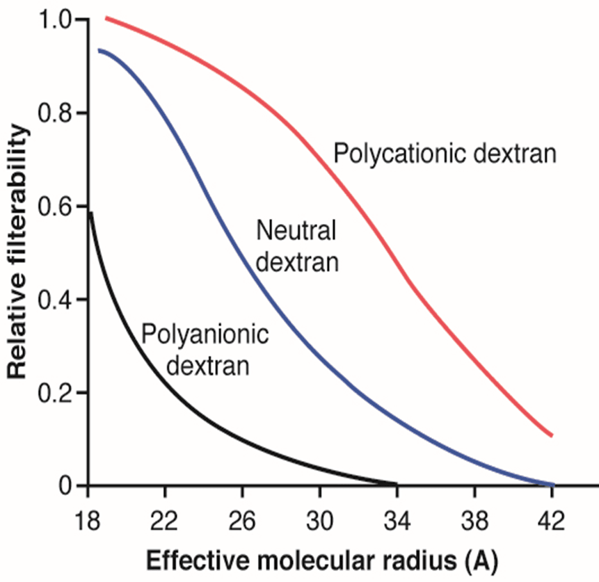
4.4 Calculating GFR (IO d)
- GFR — the volume of plasma filtered into Bowman’s capsule per minute; normal ≈ 125 mL/min (≈ 180 L/day).
- Clearance — the volume of plasma cleared of a substance per minute: C = (U × V) / P, where U = urine concentration, V = urine flow rate, P = plasma concentration.
- Inulin — the gold standard: freely filtered, not reabsorbed or secreted, so its clearance equals GFR exactly.
- Creatinine — the practical clinical marker: made by muscle, freely filtered, only minimally secreted, so creatinine clearance slightly OVERestimates true GFR but is convenient. Labs report an eGFR from serum creatinine + patient characteristics.
- Filtration fraction — FF = GFR / renal plasma flow ≈ 125/650 ≈ 0.2 (about 20% of plasma entering the glomerulus is filtered). GFR is ~10% lower in women and declines with normal aging.
4.5 Regulation of GFR (IO e)
GFR is governed by the Starling forces across the glomerular capillary:
GFR = Kf × (PG − PB − πG + πB)
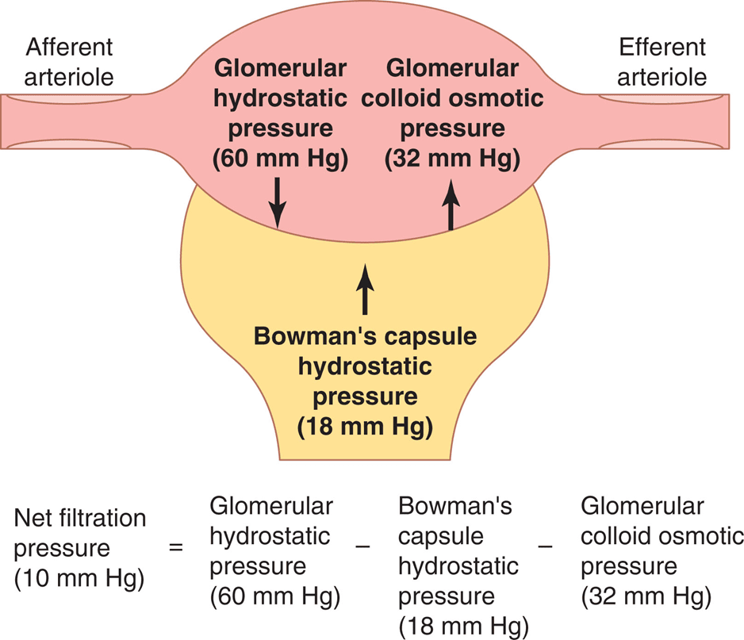
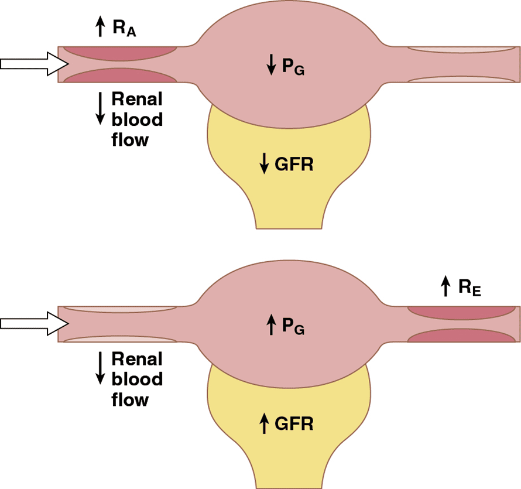
Autoregulation, RBF, and hormones
- Myogenic mechanism — ↑ arterial pressure stretches the afferent arteriole, which reflexively contracts, keeping PG (and GFR) stable.
- Tubuloglomerular feedback — the macula densa (in the juxtaglomerular apparatus) senses NaCl delivery. High GFR → more NaCl → adenosine/ATP constrict the afferent arteriole → GFR back down. Low GFR → less NaCl → renin release → angiotensin II preserves GFR. Together these hold GFR/RBF nearly constant over arterial pressures of ~80–180 mmHg.
- Hormonal/neural — angiotensin II (constricts efferent, preserves GFR), ANP (raises GFR/promotes natriuresis), sympathetic nerves (constrict, ↓GFR in stress), and renal prostaglandins (protective vasodilators).
- Renal blood flow — the kidneys get ~22% of cardiac output; RBF = ΔP / total renal vascular resistance (Ra + Re + Rv). Much of renal O2 use goes to tubular Na+ reabsorption.
5 · Renal II
Tubular Reabsorption & Secretion · Urine Concentration/Dilution · Regulation of Ions
Instructional Objectives
- Describe how hormones regulate kidney function.
- Explain renal function in relation to Na+, K+, H+, and HCO3−.
- Discuss the functions of the segments that compose the nephron.
- Describe the countercurrent multiplier system.
- Describe the roles of the collecting ducts and ADH on urine formation.
- Review the renin–angiotensin–aldosterone (RAAS) pathway.
5.1 The Nephron and Its Segments (IO 3)
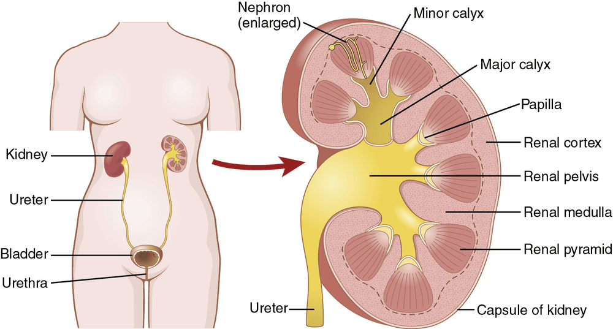
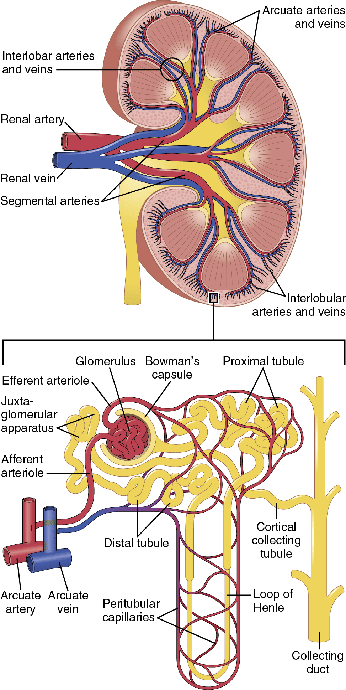
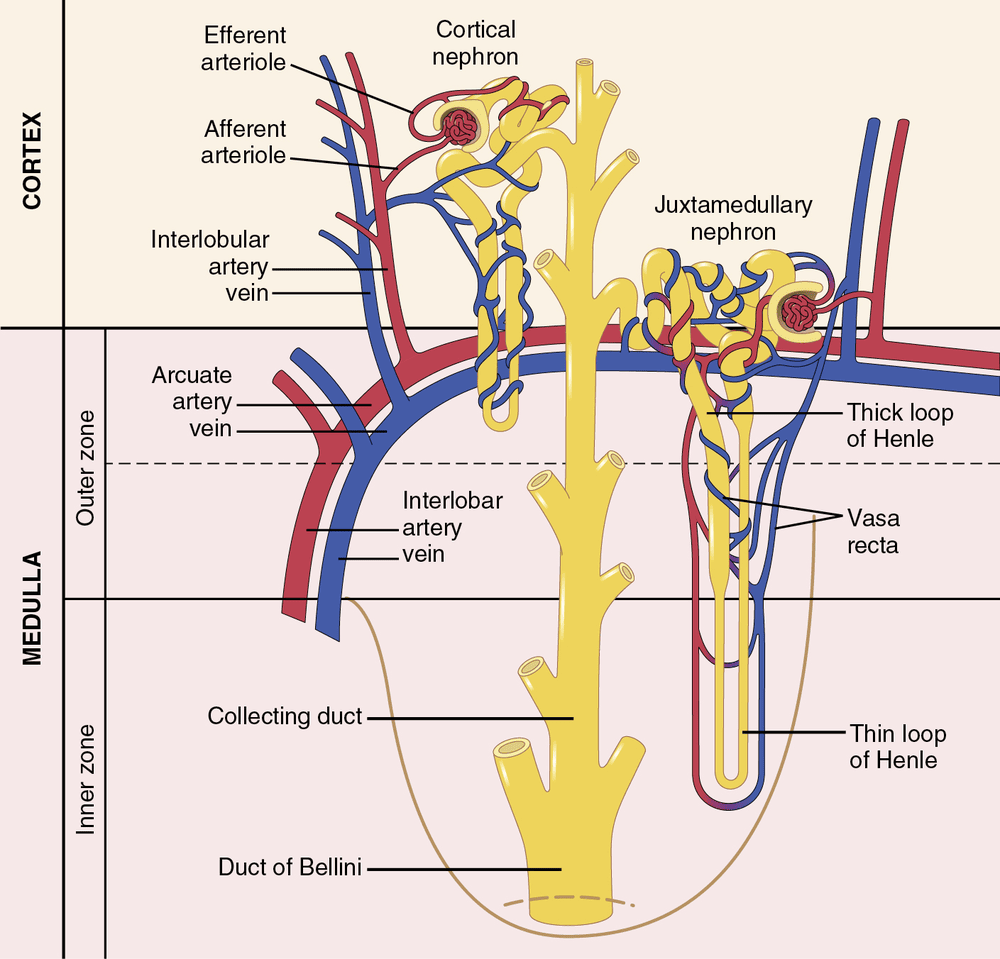
What each segment does
- Proximal tubule — reabsorbs the bulk (~65%) of filtered Na+, water, glucose, amino acids, and HCO3−; freely water-permeable.
- Thin descending limb — water-permeable, solute-impermeable: water leaves, filtrate concentrates.
- Thick ascending limb — the "diluting segment": actively reabsorbs Na+, K+, Cl− (Na-K-2Cl) but is water-IMPERMEABLE, so it dilutes the filtrate and loads the medulla with salt.
- Early distal tubule — active NaCl reabsorption (~5%), water-impermeable; contains the macula densa; major site of Ca2+ reabsorption (TRPV5, enhanced by PTH).
- Late distal tubule & collecting duct — water permeability depends on ADH; site of aldosterone-controlled Na+/K+ handling and acid-base fine-tuning.
5.2 Hormonal Regulation of the Kidney (IO 1, 5)
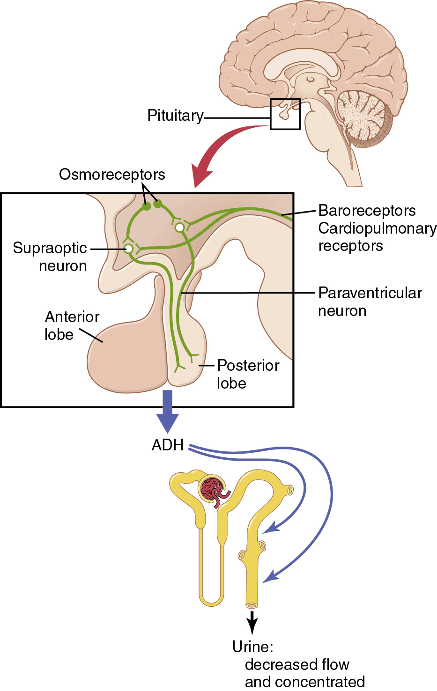
The other regulatory hormones
- Aldosterone — acts on principal cells (late distal/collecting): ↑ Na+ reabsorption and ↑ K+ secretion (via Na+/K+-ATPase, ENaC, ROMK); on intercalated cells ↑ H+ secretion. Increased by angiotensin II and high K+; decreased by ANP and high Na+.
- Angiotensin II — stimulates aldosterone, directly ↑ Na+ reabsorption along the tubule, and constricts the efferent arteriole to preserve GFR and drive Na+/water retention.
- ANP (atrial natriuretic peptide) — released when blood volume rises; dilates the afferent and constricts the efferent to ↑ GFR, and promotes Na+ and water excretion (natriuresis/diuresis) → lowers volume/pressure. The counter-regulator to RAAS.
- PTH — ↑ Ca2+ reabsorption (distal tubule) and ↓ phosphate reabsorption (proximal tubule).
Mnemonic: ADH Adds water · Aldosterone Adds sodium · Angiotensin II Assists Na+/water retention · ANP Allows Na+/water to leave · PTH Preserves calcium, Tosses phosphate.
5.3 The RAAS Pathway (IO 6)
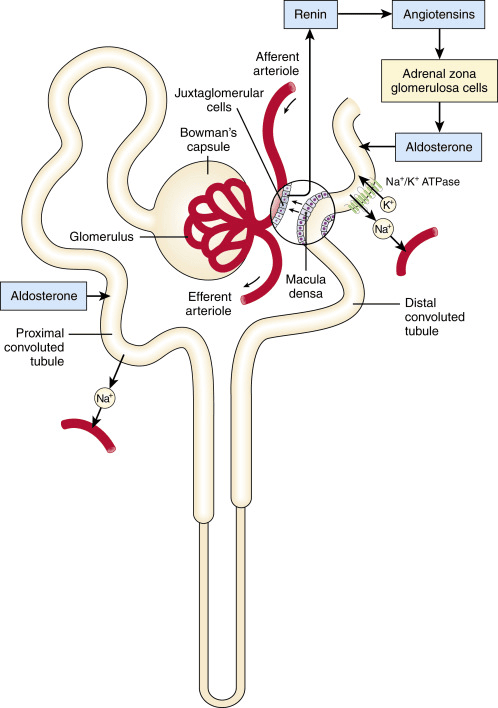
The RAAS sequence
- Angiotensinogen (from the liver) is cleaved by renin → Angiotensin I.
- Angiotensin I is converted by ACE (mainly in the lungs) → Angiotensin II.
- Angiotensin II → constricts efferent arterioles, directly ↑ Na+ reabsorption, ↑ ADH, ↑ thirst, and stimulates the adrenal cortex to release aldosterone.
- Aldosterone → ↑ Na+ reabsorption (water follows) in the distal nephron.
- Net result — Na+ and water retention → ↑ blood volume and ↑ blood pressure (restoring the low pressure/volume that started the cascade).
5.4 Urine Formation & the Countercurrent System (IO 4, 5)
- Four basic processes — Excretion = Filtration − Reabsorption + Secretion. Filtration at the glomerulus; reabsorption (water, glucose, amino acids, Na+, Cl−, HCO3−) mainly in the PCT; secretion (H+, K+, NH4+, drugs/toxins) in proximal and distal segments/collecting ducts.
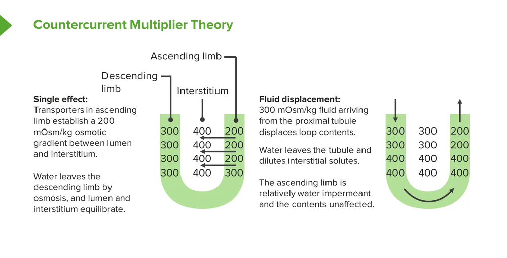
When ADH is present, the collecting duct becomes water-permeable and water is drawn out into this hyperosmotic medulla → concentrated urine. When ADH is absent, the duct stays impermeable and the dilute fluid is excreted → dilute urine.
5.5 Renal Handling of Ions & Acid–Base (IO 2)
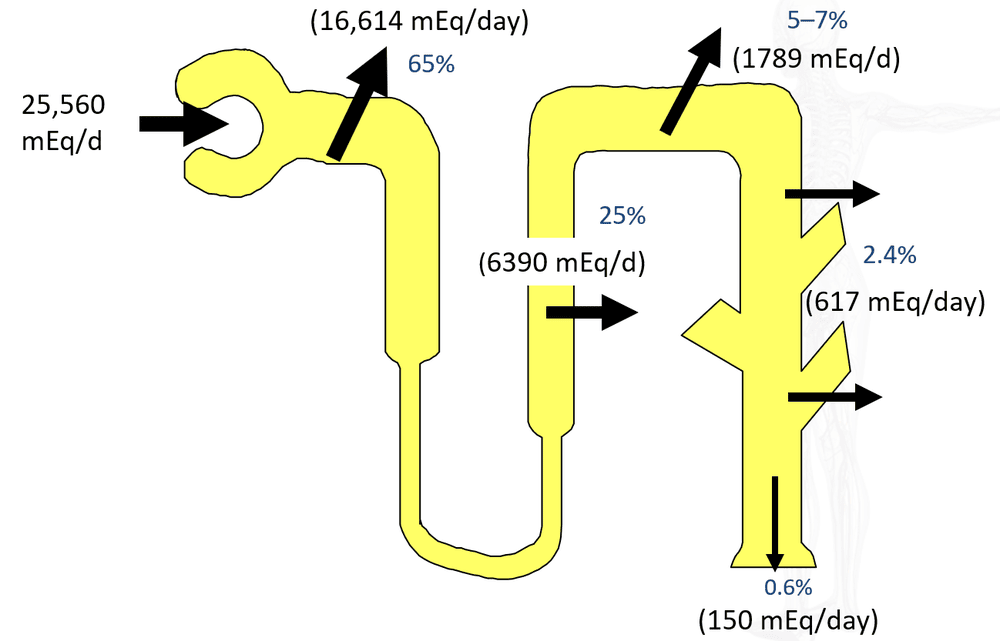
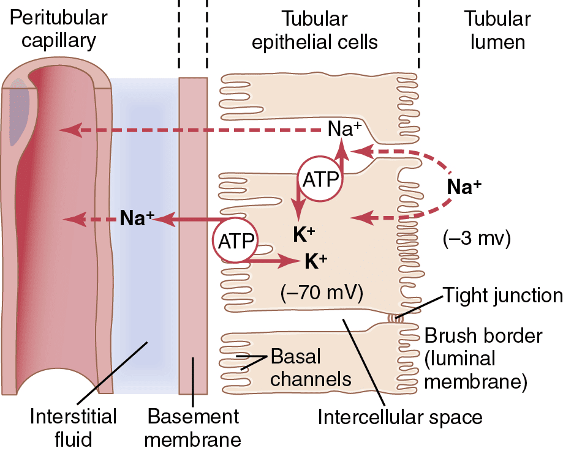
Potassium, hydrogen, and bicarbonate
- K+ — reabsorbed proximally; finely SECRETED by principal cells in the collecting duct under aldosterone. Because the same pump moves Na+ in and K+ out, "when Na+ is reabsorbed, K+ is secreted."
- Acid–base — the proximal tubule reabsorbs ~80–90% of filtered HCO3− (needs carbonic anhydrase). Type A intercalated cells in the collecting duct secrete H+ (via H+-ATPase / H+/K+-ATPase) and reabsorb/generate new HCO3−; type B cells can secrete HCO3−.
- Ammonium buffer — the tubule makes NH3, which binds secreted H+ (NH3 + H+ → NH4+) to excrete acid and regenerate bicarbonate — a major way the kidney handles a chronic acid load.
6 · Bone & Muscle Physiology
Skeletal & Smooth Muscle Contraction · Bone Cells · Bone Metabolism & Calcium
Instructional Objectives
- Describe the neuromuscular junction.
- Discuss excitation–contraction coupling of skeletal muscle.
- Compare and contrast the composition and function of smooth and striated muscles.
- Review bone histology and the types of bone cells.
- Describe the physiology of bone metabolism and bone cells.
6.1 Skeletal Muscle Organization
Skeletal muscle is built from progressively smaller units. Each muscle fiber is a single, multinucleated cell wrapped by the sarcolemma (its plasma membrane). Inside, the cytoplasm (sarcoplasm) is packed with myofibrils — the contractile rods — with mitochondria and sarcoplasmic reticulum tucked between them. Each myofibril is a chain of sarcomeres, the smallest contractile unit of muscle.
6.2 The Neuromuscular Junction (IO a)
The neuromuscular junction is the specialized synapse between a motor neuron and a muscle fiber, occurring at the motor end plate (usually just one per fiber). The nerve terminal sits in a synaptic trough; the synaptic cleft (20–30 nanometers wide) is loaded with acetylcholinesterase, and subneural clefts fold the muscle membrane to increase surface area — acetylcholine receptors sit at the tops of these folds and voltage-gated sodium channels line the bottom halves.
From acetylcholine to muscle action potential
- Receptor — the nicotinic acetylcholine receptor is a nonselective cation channel: it lets Na⁺, K⁺, and Ca²⁺ through, but the net driving force produces an inward movement of positive charge (mostly Na⁺). Its combined equilibrium potential is ~0 millivolts.
- End-plate potential — this inward current depolarizes the end plate. If it spreads far enough to open the neighboring voltage-gated sodium channels, a full muscle action potential fires and propagates along the fiber.
- Termination — acetylcholinesterase in the cleft rapidly hydrolyzes acetylcholine, ending the signal so each nerve impulse produces exactly one muscle response.
6.3 Excitation–Contraction Coupling (IO b)
Excitation–contraction coupling is how the electrical action potential is converted into a mechanical contraction. Two membrane systems make it possible: transverse (T) tubules — invaginations of the sarcolemma filled with extracellular fluid that carry the action potential deep into the fiber — and the sarcoplasmic reticulum, the intracellular Ca²⁺ store whose swollen terminal cisternae sit against the T-tubules.
6.4 The Sarcomere & Sliding Filaments
The sarcomere runs from one Z disc to the next. Thin filaments (actin) anchor at the Z discs; thick filaments (myosin) sit in the center; the giant elastic protein titin tethers myosin to the Z disc and provides passive recoil. Contraction is the sliding-filament mechanism: the filaments slide past each other, shortening the sarcomere without the filaments themselves changing length.
6.5 Muscle Mechanics & Fiber Types
Isometric vs. isotonic: an isometric contraction develops force at constant length (the muscle does not shorten — pushing against an immovable load), whereas an isotonic contraction shortens against a constant load. Stretching a muscle first lengthens the sarcomeres, then loads the connective-tissue collagen, realigning fibers along the line of force — the basis for rehabilitating scarred tissue.
6.6 Smooth Muscle (IO c)
Smooth muscle has mononucleate cells with no striations and forms the walls of hollow organs (gut, airways, blood vessels, urogenital tract). It comes in two organizations: unitary (visceral) — sheets of electrically coupled cells joined by gap junctions that contract as a unit (a functional syncytium), often spontaneously active; and multiunit — discrete, densely innervated bundles that contract only when stimulated (e.g., iris, vas deferens, piloerector muscles).
Contraction is myosin-based, not actin-based. Smooth muscle uses the same sliding-filament actin–myosin interaction, but troponin is absent; the Ca²⁺-sensor is calmodulin. Myosin cannot act until its regulatory light chain is phosphorylated by myosin light chain kinase, which is active only when bound to Ca²⁺–calmodulin.
6.7 Bone Cells & Ossification (IO d)
Ossification is the calcification of a collagen scaffold. Osteoblasts secrete type I collagen (which requires ascorbic acid, vitamin C, as a cofactor for lysyl hydroxylase) plus bone matrix proteins, forming unmineralized osteoid. Hydroxyapatite crystals then precipitate onto the collagen, and calcium–phosphate salts deposit within them to harden the bone (~70% of bone is inorganic salt).
The three bone cells
- Osteoblast — a versatile secretory cell (relative of the fibroblast) that still divides. It makes type I collagen (90% of bone protein) and matrix proteins including osteocalcin and osteonectin (calcium-binding), bone sialoproteins, osteopontin, and alkaline phosphatase. Osteocalcin bonds hydroxyapatite to collagen, and vitamin K helps it do that job.
- Osteocyte — a mature osteoblast that became trapped in the matrix it secreted, now living in a lacuna and communicating through canaliculi. Osteocytes sense mechanical load (piezoelectric signaling) and maintain the bone matrix, participating in both synthesis and degradation to keep calcium homeostasis.
- Osteoclast — a large, multinucleated cell derived from the fusion of hemopoietic granulocyte/macrophage progenitor cells. It resorbs bone from a pit called Howship's lacuna, releasing protons and lysosomal enzymes (cathepsin K and matrix metalloproteinases) into the sealed space to dissolve mineral and digest collagen.
6.8 Bone Metabolism & Calcium Regulation (IO e)
Bone is regulated by mechanical force but even more by hormones. The two primary calcium hormones are parathyroid hormone (from the parathyroid glands) which raises blood calcium, and calcitonin (from thyroid C-cells / parafollicular cells) which lowers it. During growth, growth hormone drives osteoprogenitor division, and epiphyseal growth-plate chondrocytes respond to liver-derived insulin-like growth factor I.
Parathyroid hormone — the master calcium regulator
- Trigger — calcium-sensing receptors in the parathyroid gland detect a fall in serum calcium and release parathyroid hormone. In plasma, ~40% of calcium is protein-bound and ~60% is free/filterable; only free ionized calcium is biologically active.
- Bone — parathyroid hormone binds osteoblasts, driving them to express RANKL (receptor activator of nuclear factor kappa-B ligand) and release macrophage colony-stimulating factor. RANKL and this factor push preosteoclasts to mature into bone-resorbing osteoclasts. Parathyroid hormone also lowers osteoprotegerin, a decoy that normally binds RANKL to block osteoclast formation.
- Kidney — increases renal calcium reabsorption (distal tubule), inhibits phosphate reabsorption in the proximal tubule (so phosphate is excreted), and stimulates active vitamin D production, which raises intestinal calcium absorption. Vitamin D deficiency can cause secondary hyperparathyroidism.
7 · High-Yield Summary — Rapid Review
Cover the right side and quiz yourself. These are the points most likely to be tested.
Endocrine I — Hormones, Pituitary, Thyroid
- Three hormone classes — peptides & catecholamines: water-soluble, membrane receptors, fast. Steroids & thyroid hormone: lipid-soluble, intracellular receptors, slow gene effects.
- Anterior pituitary — makes its own hormones (GH, ACTH, TSH, PRL, FSH, LH); controlled by hypothalamic releasing hormones via the portal system.
- Posterior pituitary — only stores ADH (supraoptic) and oxytocin (paraventricular) made in the hypothalamus; controlled by nerves.
- GH — anabolic for protein, mobilizes fat, "diabetogenic" (raises glucose); acts largely via IGF-1 from the liver.
- Thyroid — iodide trapped by NIS, organified by peroxidase onto thyroglobulin (MIT/DIT → T3/T4), stored in colloid. T4 is main product; T3 is more active. Raises BMR. HPT axis: TRH → TSH → T3/T4 → negative feedback.
- Free vs. bound — only free hormone is active; pregnancy raises TBG (↑ total, normal free/TSH = euthyroid).
Endocrine II — Adrenal, Pancreas, Calcium
- Adrenal cortex — GFR = Salt (aldosterone/glomerulosa), Sugar (cortisol/fasciculata), Sex (androgens/reticularis). Medulla = catecholamines.
- Aldosterone — ↑ Na+ reabsorption, ↑ K+/H+ secretion (collecting duct). Driven by ↑ K+ and angiotensin II.
- Cortisol — ↑ gluconeogenesis/blood glucose, protein catabolism (spares liver), anti-inflammatory. HPA axis with circadian peak in the morning. 11β-HSD2 protects the mineralocorticoid receptor (licorice blocks it).
- Insulin (beta cells) — fed-state storage hormone; glucose→GLUT2→glucokinase→ATP→closes K+ channel→depolarize→Ca2+→exocytosis. Sulfonylureas act here.
- Glucagon (alpha) — raises glucose via glycogenolysis/gluconeogenesis. Somatostatin (delta) inhibits both.
- Calcium — PTH raises Ca2+ (bone resorption via osteoblasts→osteoclasts, renal Ca2+ reabsorption, ↑ active vitamin D, ↑ phosphate excretion). Vitamin D: skin→liver(25)→kidney(1,25, PTH-driven)→gut Ca2+ absorption. Calcitonin lowers Ca2+.
Endocrine III — Reproduction
- Male — LH → Leydig cells → testosterone; FSH → Sertoli cells → spermatogenesis + inhibin. Pulsatile GnRH is essential. DHT (5α-reductase) for external genitalia/prostate/hair.
- Female — two-cell model: LH→theca→androgens; FSH→granulosa→aromatase→estrogen. Estrogen’s pre-ovulatory peak flips to positive feedback → LH surge → ovulation (~day 14).
- Endometrium — proliferative (estrogen) then secretory (progesterone); corpus luteum death → menses.
- Pregnancy — hCG rescues the corpus luteum (peaks ~10–12 wk); placenta then makes estrogen/progesterone. Progesterone quiets the uterus.
- Lactation — prolactin drives milk synthesis (suckling → prolactin spikes); oxytocin drives let-down; suckling suppresses GnRH.
Renal I — Filtration & GFR
- Bladder — parasympathetic pelvic (S2–S4) empties (detrusor); sympathetic (L1–L2) stores; pudendal = voluntary external sphincter.
- Filtration barrier — fenestrated endothelium + basement membrane + podocyte slits; blocks by size AND negative charge (albumin repelled).
- GFR ≈ 125 mL/min (180 L/day). GFR = Kf × (PG − PB − πG). Net filtration pressure ≈ 10 mmHg. Inulin = gold standard; creatinine clearance slightly overestimates GFR.
- Regulation — PG is the main lever. ↑ afferent resistance ↓ GFR; ↑ efferent resistance ↑ GFR. Autoregulation = myogenic + tubuloglomerular feedback (macula densa) over ~80–180 mmHg.
Renal II — Tubules, Concentration, Ions
- Segments — PCT reabsorbs ~65% Na+/bulk; thick ascending limb = diluting segment (Na-K-2Cl, water-impermeable, loads medulla with salt); collecting duct = ADH-controlled water, aldosterone-controlled Na+/K+.
- ADH — V2 receptor → aquaporin-2 → water reabsorption → concentrated urine. No ADH → dilute urine.
- Countercurrent multiplier — single effect (ascending limb pumps NaCl out) + fluid displacement (water leaves descending limb) build the medullary gradient (~300 cortex → ~1200 papilla). Vasa recta preserve it.
- RAAS — low pressure/low NaCl/sympathetic → renin → angiotensinogen → AngI →(ACE)→ AngII → efferent constriction + aldosterone + ADH + thirst → Na+/water retention → ↑ BP. ANP opposes it.
- Acid–base — PCT reabsorbs ~80–90% HCO3−; type A intercalated cells secrete H+ and generate new HCO3−; ammonium (NH3+H+→NH4+) excretes acid.
Bone & Muscle — Contraction, Bone & Calcium
- Neuromuscular junction — action potential → voltage-gated Ca²⁺ opens → ~125 vesicles release acetylcholine → nicotinic cation channel → end-plate potential → muscle action potential. Acetylcholinesterase terminates it.
- Excitation–contraction coupling — action potential down T-tubule → dihydropyridine receptor (voltage sensor) mechanically opens ryanodine receptor → Ca²⁺ out of sarcoplasmic reticulum. Skeletal = voltage-triggered (VACR, no outside Ca²⁺); cardiac = calcium-triggered (CACR, needs extracellular Ca²⁺).
- Sliding filament — Ca²⁺ binds troponin C → tropomyosin uncovers actin → myosin "walk-along" power stroke. A band constant, I band/H zone narrow.
- Fiber types — set by myosin ATPase Vmax. Slow (Type I, red) = oxidative, fatigue-resistant, recruited first; Fast (Type II, white) = glycolytic, powerful, fatigable. Motor unit = one neuron + its fibers (all same type).
- Smooth muscle — no troponin; Ca²⁺→calmodulin→myosin light chain kinase phosphorylates myosin (myosin-based); myosin light chain phosphatase relaxes it. Latch state, 60–75% shortening, very energy-efficient.
- Bone cells — osteoblast (secretes type I collagen = 90% of bone protein + osteocalcin; needs vitamin C/K) → osteocyte (in lacuna, senses load via canaliculi) ; osteoclast (blood-derived, multinucleated, resorbs via cathepsin K in Howship's lacuna).
- Calcium — PTH raises Ca²⁺ (osteoblast RANKL → osteoclasts, ↑renal Ca²⁺ reabsorption, ↓phosphate reabsorption, ↑vitamin D). Calcitonin lowers Ca²⁺ (inhibits osteoclasts). Only free ionized calcium is active; calcium and phosphate move inversely.